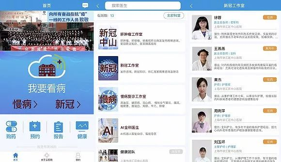
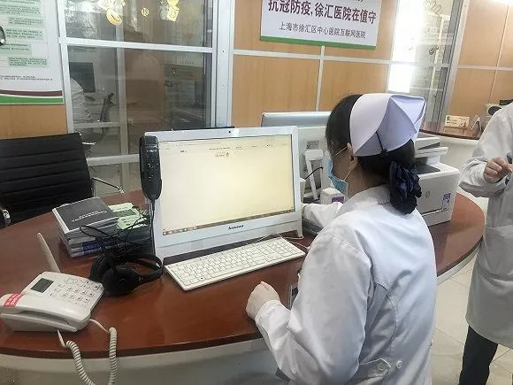
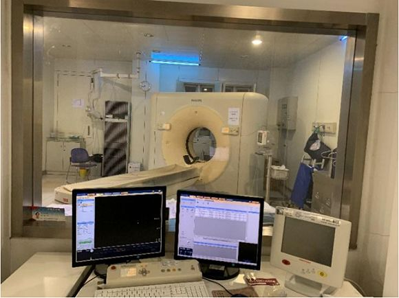

镜头下的武汉社区医院：临危受命的疫情最前线
原文链接 备份链接 疫情当下，武汉实行分类和分级诊疗体系，两百余家社区卫生服务中心进行患者初筛初诊。新闻摄影记者胡冬冬记录下社区医院的日常，这里是疫情防控的前沿阵地。 ··············· 连着几天，30岁的胡冬冬拍摄下一家社区 …
 摄影：杨蓉
摄影：杨蓉
作者：杨蓉
“
疫情期间门诊量下降，云医院处方量明显增多。
”
“今天上午我已经看了12个病人，其中10个病人都是咨询新冠相关内容，2个是老病人。”2月18日上午11时19分，复旦大学附属中山医院徐汇医院老年科副主任医师徐蓉在视频通话中告诉记者，此时她已经网上坐诊约一小时。
这则视频通话也是通过徐汇云医院APP在线诊疗功能发起的，从点进首页的“我要看病”到选择在岗的医生，再到进入线上诊室开始问诊，总共用时不超过30秒。除了视频通话以外，徐汇云医院APP也具备发送文字、照片、语音的功能。

徐汇云医院APP截屏，可选择医生预约线上或线下门诊，或直接进入诊疗。
徐汇医院周俭院长透露，从2015年推出徐汇云医院这一智慧诊疗平台以来，医生们已经在网上会诊180多万人次，而且大部分都是视频会诊。“视频会诊就是面对面，实际上就像（到医院）看病一样的，病人的获得感和体验感是非常强的。”
1月31日起，徐汇云医院在APP端和微信小程序另外专门开通了“新冠工作室”，截至2月18日，平均每日有210位专家24小时提供服务，发热、新冠病情相关咨询占咨询总量约30%。18天以来，工作室累计接待用户已达83804人次。
徐汇医院执行院长朱福表示，徐汇云医院的咨询服务都是不收门诊费的。开展在线诊疗的医生需获执业医师资质3年以上，未满3年的执业医师仅可实施咨询及随访。除了医院规定的固定排班时间和患者预约时间以外，医师和药师也可以用医生端APP在碎片化时间办公。

护士在徐汇医院一楼为互联网诊疗辟出的办公室内值班。摄影：杨蓉
作为上海市第一家互联网医院，徐汇云医院还和上海600多家药房签约。如果患者享有上海医保，可以直接使用医保卡到自己选择的药房消费拿药。
周俭透露，总体上，疫情期间门诊量下降，云医院处方量明显增多，“徐汇云医院发热咨询最多达到1000多次，每天有200-300人次咨询，平均每小时就有十个病人左右。”
除提供线上看诊服务外，有需要进行线下门诊问医的市民也可通过徐汇云医院进行网络挂号，再前往医院就诊。
1月31日，徐汇区卫生系统恢复上班，各医疗机构门诊全部按节前安排开诊。二级医院除可能造成病原扩散风险的诊疗专科和操作项目（如口腔科、眼科、五官科、呼吸科内镜操作等）外，各诊疗项目陆续开诊。
为控制人流，徐汇医院分开设进出口各一个，进口处的医护人员均佩戴口罩、护目镜，身穿防护服，所有进入人员需出示身份证及来访患者医保卡并测温，领取“道口通行证”后再按指示走不同通道进入。

徐汇医院门口医护人员为进入人员测温。摄影：杨蓉
来访者进入一楼大厅后需接受流行病学调查，记录身份证号码、手机号、是否有重点地区停留史、是否为密切接触者、是否有咳嗽和发烧等症状等信息。医护人员介绍，这样的电子版及纸质流调每天平均要做1200人次，双休日为400人次。
据界面新闻观察，2月18日早上10点左右的徐汇医院有部分中老年人陆续前来就诊，接受流调的队伍最多时排有3人，到中午12点时，则几乎没有病人。

中午12点徐汇医院一楼大厅病人寥寥无几。摄影：杨蓉
在日常诊疗之外，作为上海市发热门诊定点医院之一的徐汇医院还有一个任务：其“医联体”内排摸出来的发热患者，都要送到这里进行留观隔离。徐汇区-中山医院医疗联合体2016年4月14日成立，成员包括一级医院复旦大学附属中山医院，二甲医院徐汇医院，以及徐家汇等5家社区卫生服务中心。
徐汇医院目前共有发热留观病房7间，为应对返程高峰，还预留了一层病区作为发热留观病房，内有来自感染科、呼吸内科、重症医学科的16位医师、30位护士驻守，26位高级职称专家组成临床专家团，值班专家每日至少进行3次查房。发热门诊内设收费窗口和CT检查室，物理隔断，减少交叉感染。

为发热病人设置的独立检查CT。图片来源：徐汇医院
目前，徐汇医院已累计留观15例疑似患者，排除12例，确诊2例，确诊的2例已送往上海专门收治成人确诊病人的公共卫生临床中心。
徐汇医院留观后排除的12例疑似患者中，有4例由徐家汇社区卫生服务中心排摸后转送。该中心主任王剑波透露，每天中心防保科对来自市级区级公安、区文旅局、健康云APP等渠道的人员名单进行查重，再将其交给街道居委进行电话核实。根据核实情况整理出当天居家观察名单，并下发到负责区域的家庭医生。后者负责落实居家观察工作，并上交给防保科汇总，所有居家观察对象均“一人一档”留存。
王剑波回忆，春节期间是最忙碌的时候。这段时间疫情刚刚暴发，排摸工作程序还没理顺，但时间又很紧，最忙的一次“上午发名单，中午之前就要报居家观察名单，下午六七点就要把居家观察落实。”
截至2月17日，徐家汇社区卫生服务中心已居家排摸1032人，其中居家医学观察262人，已解除医学观察236人；密切接触者医学观察36人，已解除密接医学观察28人；宾馆排摸176人，转送集中观察17人。

为居民进行流行病学调查。图片来源：徐家汇社区卫生服务中心
自1月31日起，徐汇区13家社区卫生服务中心已全部开诊，71家社区卫生服务站中38家有条件的服务站开诊，在排摸之外，居家观察对象隔离期间的用药需求以及普通居民的一般诊疗、接种需求，也都落在了基层卫生部门的担子上。
为方便居家观察对象用药，徐家汇街道社区卫生服务中心建立临时进药快速申请程序，由负责医学观察的家庭医生提出申请，药房主任备案后进行临时采购并做好记录。
同时，为减少人员聚集，社区卫生中心要求接种疫苗前必须预约，在所有预防接种门诊设置红外线额温仪和耳温仪两次测温的基础上，要求接种疫苗的陪同人员数量不能超过2人，并限制每小时接种不超过10剂次。此外，暂停面对面产后访视、儿童健康体检门诊。对于其他慢性病管理、精神病管理，家庭医生将通过电话、微信进行防疫宣传及慢病管理。
目前，徐家汇街道社区卫生服务中心平均每天门诊量846人次，与去年春节后同期相比，下降了47.36%。
未经授权 禁止转载

原文链接 备份链接 疫情当下，武汉实行分类和分级诊疗体系，两百余家社区卫生服务中心进行患者初筛初诊。新闻摄影记者胡冬冬记录下社区医院的日常，这里是疫情防控的前沿阵地。 ··············· 连着几天，30岁的胡冬冬拍摄下一家社区 …
原文链接 [备份链接]() 疫情当下，武汉实行分类和分级诊疗体系，两百余家社区卫生服务中心进行患者初筛初诊。新闻摄影记者胡冬冬记录下社区医院的日常，这里是疫情防控的前沿阵地。 ··············· 连着几天，30岁的胡冬冬拍摄下 …
原文链接 备份链接 *************▲************* 1月30日，医护人员在工作间隙为自己鼓劲打气。 （新华社 陈晨/图） 全文共*3942*字，阅读大约需要9分钟。 据我所知，有的社区医院医生已经被打了，这让我 …
原文链接 备份链接 29.01.2020本文字数：2510，阅读时长大约4分钟 导读：他将自己隔离在家里的主卧室里，自己和家人都戴着口罩和手套，偶尔他们会聊天，中间隔着紧闭的房门。 作者 | 第一财经 安卓 1月27日凌晨1点，汉口的刘 …
原文链接 备份链接 【财新网】（记者 宿慧娴）武汉肺炎持续蔓延，截至1月27晚，全国确诊新型冠状病毒感染病例2844例，其中1423例位于湖北省。在湖北当地医疗资源面临超负荷压力之下，阿里健康、平安好医生、微医等多家在线医疗平台的轻问诊 …